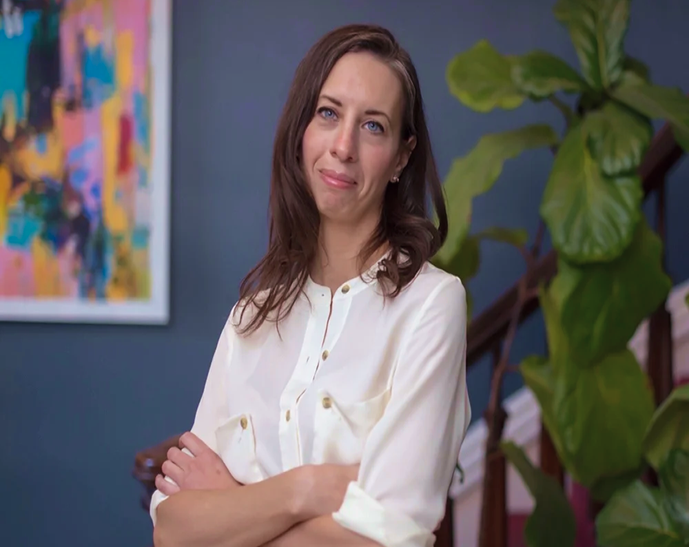
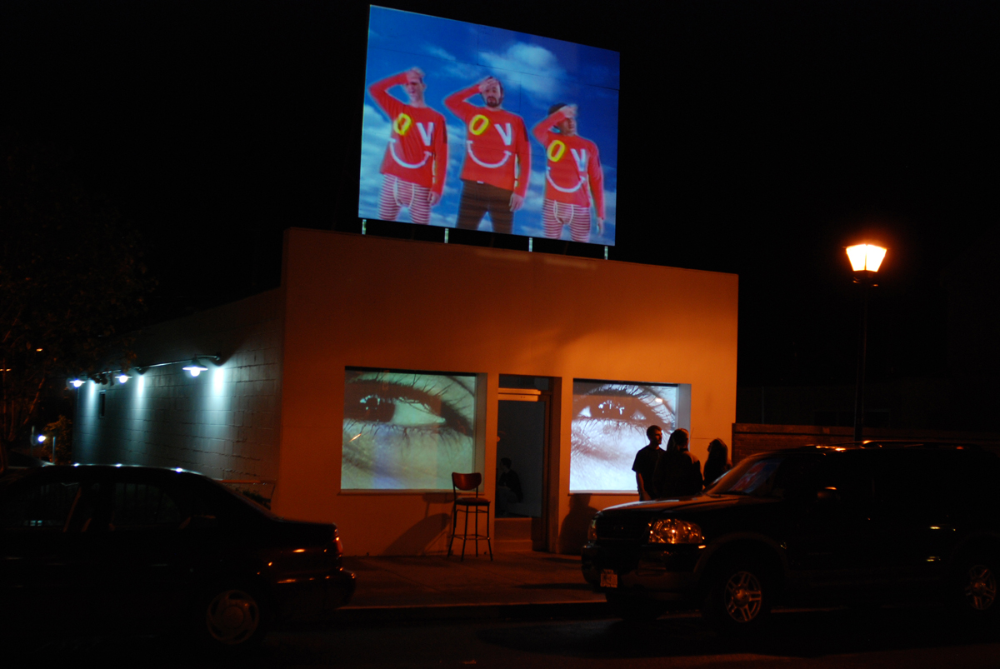
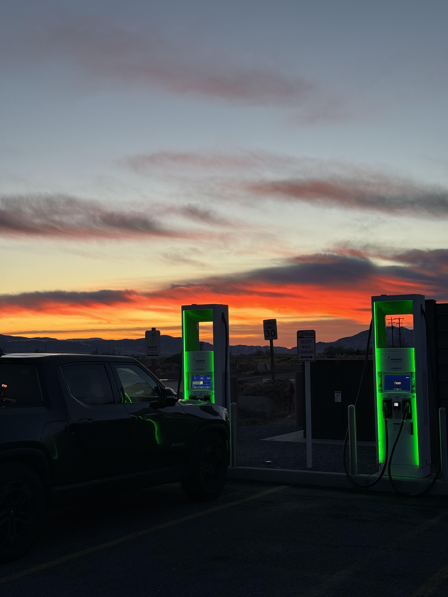
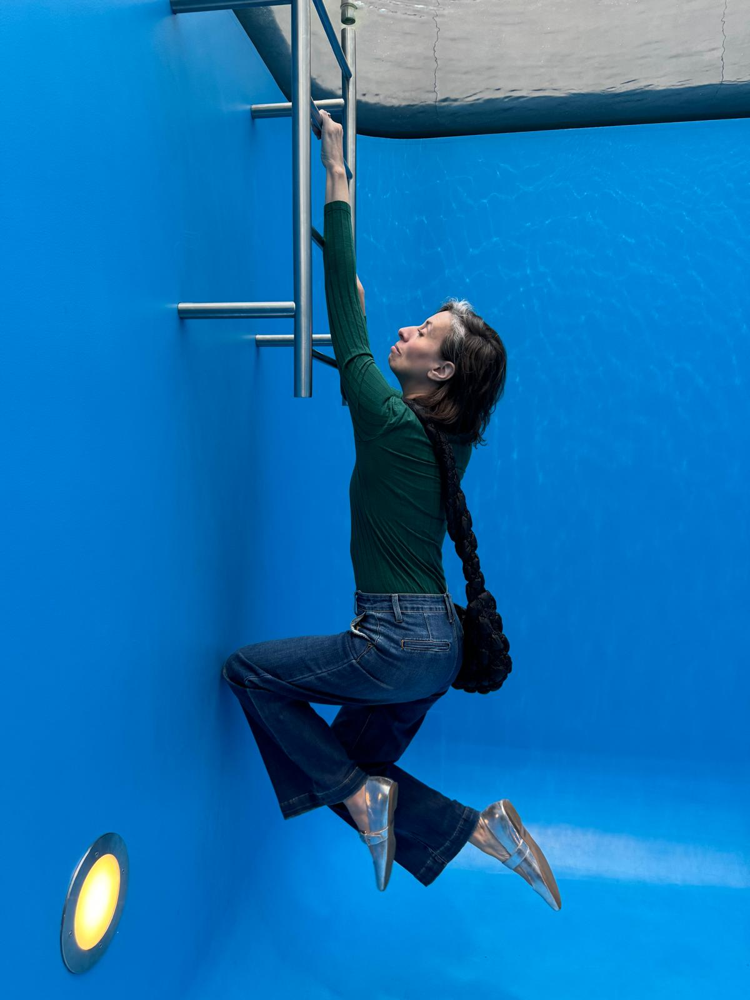
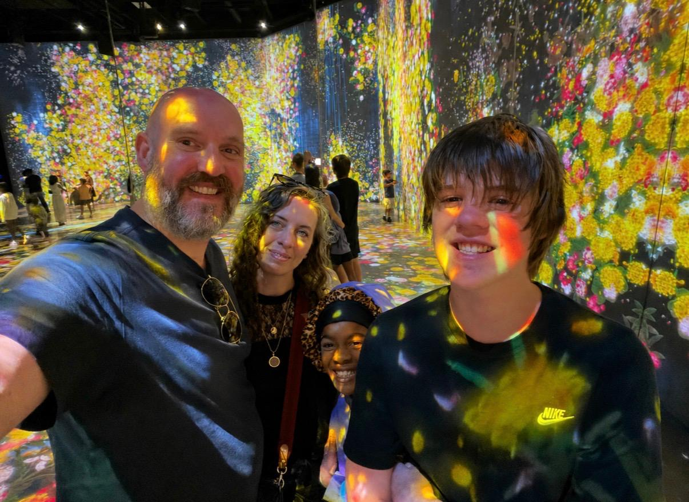

About Great Big Yarn
Psychologist Adam Mastroianni writes about finding “the job that’s crazy in the same way that you are crazy,” and many years ago, I found mine as a designer.
Great Big Yarn is the independent studio of Melissa Stafford-Woodruff. She focuses on creative direction and strategy for companies working in clean energy and technology. Nerds are her people.
Melissa has worked in design for 20 years. Her experience includes more than a decade as a gallery director and curator, years of freelance design work, and five years as creative director at an agency focused on renewable energy and climate. She’s organized over 75 exhibitions, shaped brands and helped companies explain complicated ideas. Clients have included The Marshall Project, Latitude Media, Ohmium, Caban, the Zero Emission Transportation Association and WeaveGrid.
These days, Melissa lives in upstate New York with her husband, their two kids, a dog named Johnny and four lazy cats. Through Great Big Yarn, she puts her curiosity to work for her clients. She gets a little obsessed with understanding how it all works, then turns what she learns into design that helps other people get it, too.
Oh, and the GBY name? It’s a small nod to Fresh Yarn, a site from the internet days of yore. I’m a sucker for stories and believe we all have some good ones in us. I’m excited to help tell yours.




